Uma rede trinacional de nanotelescópios integrando ciência, educação e ciência cidadã.
🇧🇷 Brasil · 🇨🇱 Chile · 🇦🇷 Argentina | Dados abertos · Ciência cidadãCom um nanotelescópio podemos medir movimentos próprios de estrelas em aglomerados abertos, identificando membros e estudando a dinâmica da Via Láctea.
O Projeto Nanotelescópios utiliza telescópios inteligentes (atualmente ZWO Seestar 50) para pesquisa, educação e divulgação em Astronomia, criando ferramentas e atividades para ajudar diferentes públicos a usar facilmente os telescópios, coletar dados, aprender sobre diferentes tópicos de Astronomia, Física e Matemática e/ou ajudar astrônomos a publicar artigos científicos.
O plano original consistia em dedicar um conjunto de nanotelescópios (cerca de 10 deles) para um levantamento da variabilidade de objetos celestes observados em nossa Galáxia. Outro conjunto de telescópios (outros 10 ou mais) será dedicado à realização de observações por astrônomos amadores e profissionais, ou até mesmo por estudantes ou pelo público em geral (orientados por astrônomos profissionais). O plano inicial de um projeto piloto de ciência cidadã foi iniciado com um número pré-selecionado de alvos de interesse científico escolhidos por nossa equipe (que atualmente são: estrelas variáveis, asteroides, aglomerados abertos, trânsitos). As iniciativas são coordenadas por astrônomos profissionais de diferentes universidades no Brasil, Argentina e Chile.
O principal objetivo de ambas as iniciativas: o levantamento da variabilidade da Galáxia e o projeto de ciência cidadã, é coletar dados que possam ser úteis para o avanço científico e a publicação de artigos, ao mesmo tempo em que servem a propósitos educacionais e de divulgação.
A área a ser coberta pelo primeiro grupo de cerca de 10 telescópios é de 600 graus quadrados do céu, selecionados a partir de campos já observados pelo telescópio robótico brasileiro T80-South e pelo levantamento Southern Photometric Local Universe Survey (S-PLUS). Os campos serão centrados no sistema de coordenadas equatoriais em AR=90° e DEC=−30° para o bojo, e AR=110° e DEC=−30° para o disco de nossa Galáxia. Se esses campos se mostrarem muito povoados para o tamanho de pixel do Seestar 50 (2,4 segundos de arco por pixel), adaptaremos os alvos.
O Projeto Nanotelescópios visa aumentar a visibilidade pública da Astronomia e gerar interesse no uso de telescópios e na exploração mais profunda de tópicos astrofísicos de maneira envolvente, potencialmente atraindo jovens para o estudo da ciência. Também busca aproximar as comunidades do Brasil, Chile e Argentina neste projeto piloto, que é de interesse para astrônomos dos três países. Se for bem-sucedido, a escala e o alcance do projeto serão ampliados no futuro, em particular para escolas no Brasil.
O Projeto Nanotelescópios faz parte de uma iniciativa maior para instalar um telescópio de 2 m no Cerro Tololo Inter-American Observatory, cujo principal objetivo será o acompanhamento de fontes descobertas pelo Vera Rubin Observatory.
Do ponto de vista da educação científica, estudantes podem aprender e desenvolver habilidades em processamento de imagens, análise de dados e nos fundamentos da operação de telescópios. A experiência com formatos digitais de dados, como imagens .fits, expõe os usuários a condições semelhantes às encontradas em pipelines profissionais de processamento de dados, aproximando-os das práticas e métodos utilizados em cenários reais. Com o treinamento adequado, estudantes e professores podem se engajar em temas de pesquisa que oferecem oportunidades únicas.
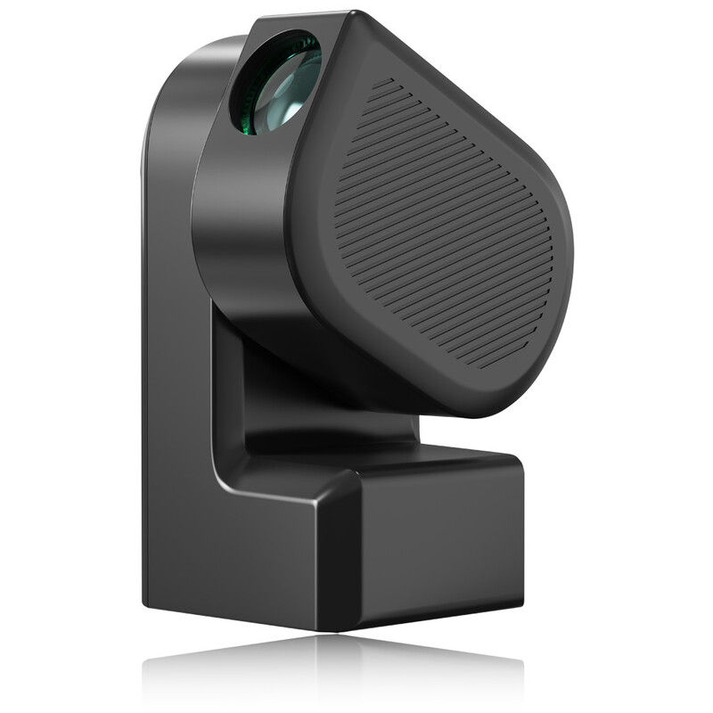
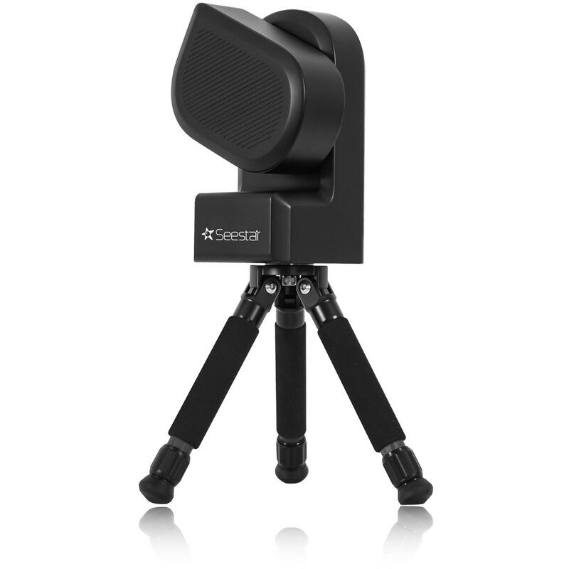
Duas imagens de um mesmo nanotelescópio. Fonte: https://www.seestar.com/products/seestar-s50.
Em resumo, os nanotelescópios oferecem uma excelente relação custo-benefício, e sua facilidade de uso os torna adequados para fins educacionais e de divulgação, bem como para tópicos científicos focados. Acreditamos que eles fornecerão a estudantes e professores ferramentas que antes eram reservadas apenas para profissionais.
Com um nanotelescópio, é possível observar ocultações causadas por tipos de asteroides sobre estrelas de fundo, dada sua capacidade de realizar medições sucessivas ao longo do tempo. Algumas ocultações produzem efeitos que podem durar dezenas de segundos, e o registro desses fenômenos de diferentes locais da Terra permite determinar as dimensões e a forma dos objetos de uma maneira que é inviável até mesmo com imageamento direto por grandes instrumentos. No caso de cometas, o imageamento a partir de vários locais de cada país proporciona uma excelente vitrine para a divulgação científica, com material de grande impacto visual.
COLOCAR IMAGENSDadas as qualidades do sensor CMOS usado no nanotelescópio S50, por exemplo, como sensibilidade, baixo ruído e excelente linearidade, é possível acompanhar a variabilidade de objetos pulsantes, sistemas binários eclipsantes e objetos que exibem variações imprevisíveis de brilho. A experiência mostra que, com uma abertura de apenas 50 mm e tempos de integração de vários minutos, é possível observar objetos que são alvos até mesmo de campanhas que utilizam o Telescópio Espacial Hubble.
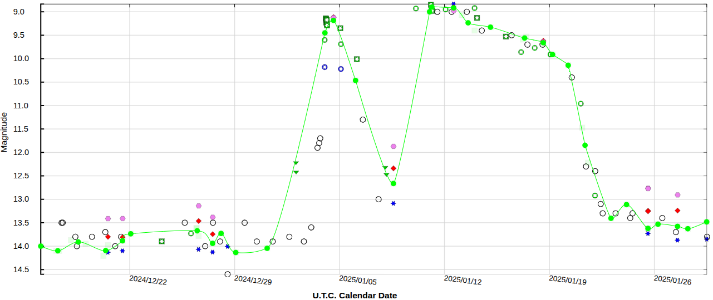
Gráfico com o outburst (surto/erupção) “normal” seguida por um mínimo e um super-outburst no sistema binário (do tipo variável cataclísmica) VW Hyi. Acesse a imagem (e sua legenda) clicando aqui; nela, pode-se exibir graficamente a cobertura das outbursts em diferentes escalas de tempo.
COLOCAR FUNÇÃO DE AMPLIAR IMAGEMUm exemplo de um fenômeno que, quando observado ao longo do tempo, pode fornecer informações valiosas sobre eventos transitórios é mostrado na figura acima: o sistema binário VW Hydri; em que múltiplas observações foram feitas usando lentes com abertura de 50 mm (semelhante à dos telescópios S50). Trata-se de um sistema binário com transferência de massa entre duas estrelas: uma semelhante ao Sol, mas um pouco mais fria e de menor massa, que transfere material para uma anã branca, um objeto extremamente compacto com massa semelhante à do Sol comprimida em uma esfera do tamanho da Terra.
A transferência de massa ocorre da estrela “normal” para a anã branca, formando um disco de acreção, um fenômeno físico desconhecido até meados do século XX. O sistema apresenta aspectos intrigantes: outbursts (surtos/erupções) com variações de brilho que ultrapassam um fator de 100, causadas pelo aumento de luminosidade do disco de gás. O mecanismo exato por trás desses outbursts ainda é desconhecido. Curiosamente, VW Hydri exibe outbursts “normais” que ocorrem a cada 20 a 30 dias (não exatamente periódicas), bem como “super-outbursts” com intervalos mais longos.
Na figura, pode-se ver um comportamento sem precedentes: o que começou como um outburst normal, durando apenas alguns dias, foi seguido por uma diminuição de brilho e, imediatamente depois, por um que durou quase duas semanas. VW Hyi tem uma posição muito ao sul no céu (com declinação de cerca de -74° no sistema de coordenadas celestes equatoriais), o que a torna um alvo privilegiado para observação no Hemisfério Sul.
COLOCAR IMAGENSSupõe-se que estrelas jovens estejam próximas de seus locais de nascimento e tenham velocidades ainda muito semelhantes às iniciais. Nesse contexto, os movimentos próprios estelares são fundamentais para distinguir membros de aglomerados de estrelas de campo.
Com auxílio de um telescópio, o movimento próprio estelar pode ser observado pela mudança na posição celeste de uma estrela ao longo do tempo (em uma aproximação de primeira ordem, os movimentos próprios são calculados a partir de um ajuste linear das posições estelares em função do tempo). Em um gráfico, ao se traçar um diagrama vetorial de movimentos próprios, por exemplo, pode-se distinguir com facilidade as estrelas que compartilham um movimento comum (membros do aglomerado) daquelas com movimentos aleatórios (estrelas de campo, não ligadas gravitacionalmente). Com isso, e a partir combinação dos movimentos próprios dos membros do aglomerado com informações adicionais (como paralaxe e velocidade radial), é possível se reconstruir o movimento 3D e a história de formação estelar do aglomerado na Galáxia.
Propomos, então, observar aglomerados abertos com diferentes propriedades (idade, distância, número de membros etc.) com os nanotelescópios para medir as posições das fontes no campo ao longo do tempo e calcular movimentos próprios. Os movimentos próprios resultantes serão usados para discutir a pertinência ao aglomerado alvo do nosso projeto. Alternativamente, os dados coletados com os telescópios S50 também podem ser combinados com levantamentos astrométricos baseados em solo (ground-based) e com o catálogo Gaia para fornecer movimentos próprios mais precisos com uma base temporal estendida. Essa última abordagem pode nos permitir detectar desvios nos movimentos estelares, por exemplo, devido a binárias (desconhecidas) não detectadas. Além dos movimentos próprios estelares dos membros do aglomerado, podemos usar as mesmas imagens para procurar fontes de movimento rápido no campo (por exemplo, corpos menores do Sistema Solar) e investigar a variabilidade das fontes no campo (como discutido no tópico anterior, Estrelas Variáveis).
COLOCAR IMAGENS...
Embora desafiador, a observação de trânsitos exoplanetários que causam uma diminuição no brilho da estrela hospedeira (a qual orbita) da ordem de poucos por cento é viável, visto que algumas podem ser visíveis a olho nu! Aqui, a natureza desafiadora de tais observações oferece uma oportunidade para explorar os limites das capacidades dos nanotelescópios, como o S50, de forma a se tornar um possível objetivo futuro.
COLOCAR IMAGENScomo e para e com quem conversamos
A história das ferramentas humanas, pode-se argumentar, é a história da tentativa de estender aquilo que nossos sentidos alcançam. O olho, primeiro instrumento que voltamos ao céu, continua sendo uma ferramenta natural para a observação do céu e suas estrelas, mas logo ficou claro que ele sozinho não bastava. Telescópios surgiram dessa necessidade: não para simplesmente aproximar pontos brilhantes e distigui-los entre o que, hoje, são classificados como planetas, estrelas, asteroides e cometas, mas para captar radiações que a capacidade de visão humana, por si só, não abarca e transformá-las em informação que possamos medir e comparar. Essa capacidade de converter o “invisível” em dados faz do telescópio uma das imagens centrais da Astronomia (tanto que não é incomum que a ideia desta seja atrelada àquele no imaginário popular).
(Vale notar que, essa “datificação”: a transformação da experiência visual em dados, medidas físicas catalogadas, facilitou e facilita a inclusão e ampliação da abordagem de entendimento do funcionamento celeste por pessoas cegas ou com perda visual.)
A ideia de que um telescópio é um aparato que nos deixa ver de perto objetos distantes não é bem certeira, porém também não completamente errada. Sim, de fato, quando o utilizamos, o telescópio parece aumentar o tamanho daquilo para qual o apontamos, porém, para além disso, proporcionam maior poder de resolução (facilitando a distinção de detalhes finos) e permitem exposições mais curtas ou longas do que poderíamos ver sem outro auxílio. A luz (ou demais ondas eletromagnéticas) é por ele captada e concentrada; é convergida, então, em uma região menor e mais próxima ao nosso olho (ou outro detector). Essa convergência se dá por um mecanismo próprio de cada telescópio e depende do que se quer ver, por quanto tempo, com qual resolução, etc. No caso dos telescópios ópticos, este mecanismo são as lentes e espelhos!
Os nanotelescópios (telescópios portáteis), que utilizamos em nosso projeto, são deste tipo: ópticos. Como comentado, eles trabalham com a luz visível (e o SeeStar S50 até um pouco mais, na faixa entre 380 nm e 1100 nm) e usam associações de lentes e/ou espelhos para formar imagens de planetas, asteroides, nebulosas, estrelas e aglomerados, por exemplo. Para saber mais sobre especificações do SeeStar S50, acesse a aba “Como observar?”
Esses instrumentos são, essencialmente, coletores de radiação eletromagnética. Dependendo do tipo, captam luz visível, ondas de rádio, infravermelho, ultravioleta, raios X ou gama. O sinal recolhido é concentrado em detectores e depois convertido em imagens, gráficos, espectros, mapas ou modelos tridimensionais. A Astronomia, portanto, não depende apenas de enxergar: ela depende de interpretar dados, e dados podem ser acessados por diferentes sentidos e tecnologias assistivas. O parâmetro mais fundamental de um telescópio é a abertura: o diâmetro de sua lente ou espelho principal. Quanto maior ela for, mais radiação o instrumento reúne e maior é sua capacidade de detectar objetos fracos e resolver detalhes finos. A resolução também varia conforme o comprimento de onda observado e as condições do ambiente, como a atmosfera terrestre. Os telescópios ópticos trabalham na luz visível. Usam lentes ou espelhos para formar imagens de planetas, estrelas, galáxias e nebulosas. Observatórios terrestres costumam ser instalados em montanhas altas e secas, onde a atmosfera é mais estável e transparente. Já os telescópios espaciais escapam da interferência atmosférica, obtendo imagens mais nítidas e detectando radiações que não chegam à superfície da Terra. Os radiotelescópios captam ondas de rádio, muito mais longas que a luz visível. Suas antenas podem ser combinadas pela técnica de interferometria: vários instrumentos separados trabalham em conjunto, simulando uma abertura gigantesca. Isso permite altíssima resolução e o estudo de fenômenos como pulsares, quasares, nuvens de gás e a radiação cósmica de fundo. A astronomia infravermelha detecta calor de objetos frios, poeira cósmica e regiões de formação estelar. Como o vapor d’água da atmosfera absorve grande parte do infravermelho, esses observatórios precisam ficar em locais muito secos e elevados, ou no espaço. Seus instrumentos também são resfriados para reduzir o ruído térmico e aumentar a sensibilidade. Há ainda os levantamentos de todo o céu, que varrem grandes áreas em vez de observar apenas um alvo por vez. Eles produzem mapas e catálogos que revelam desde asteroides e cometas até estrelas variáveis e galáxias distantes. Esses projetos complementam as observações detalhadas de telescópios individuais. Para quem não vê com os olhos, a Astronomia continua acessível por meio de sonificação de dados, mapas táteis, impressões 3D de estruturas cósmicas, descrições verbais detalhadas e softwares que convertem informações visuais em outros formatos. Pessoas cegas ou com baixa visão podem estudar, ensinar e participar de descobertas astronômicas, porque o universo se revela não só pela imagem, mas também pelo som, pela textura, pela matemática e pela interpretação de sinais. Assim, o telescópio é uma extensão refinada dos nossos sentidos. Cada avanço tecnológico amplia nossa percepção do cosmos, e diferentes comprimentos de onda revelam processos distintos. A Astronomia moderna depende de múltiplos instrumentos, em terra e no espaço, trabalhando em conjunto para construir uma compreensão cada vez mais completa do universo
CARROLL, Bradley W.; OSTLIE, Dale A. An Introduction to Modern Astrophysics. 2nd ed. San Francisco: Pearson Addison-Wesley, 2007. p. 141-172. ISBN 0-321-44284-9.
As observações de fenômenos transitórios, como ocultações estelares, são extremamente importantes para o estudo dos pequenos corpos do Sistema Solar. O Sistema Solar possui diversas regiões povoadas por asteroides e outros objetos, como o Cinturão Principal de Asteroides e o Cinturão de Kuiper. O estudo dessas populações fornece pistas fundamentais sobre a formação e a evolução do Sistema Solar.
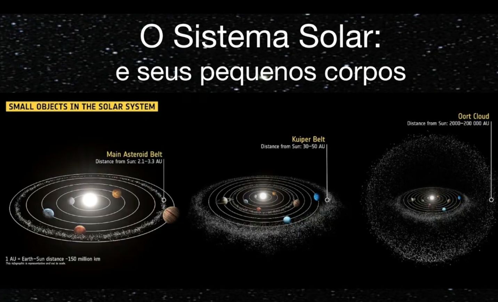
Legenda da imagem.
Os asteroides, na maioria das vezes, aparecem em imagens como simples pontos de luz. Devido ao seu pequeno tamanho e à grande distância, não é possível observar diretamente suas formas a partir da Terra com telescópios comuns. As imagens detalhadas que mostram suas superfícies geralmente são obtidas por missões espaciais (sondas).
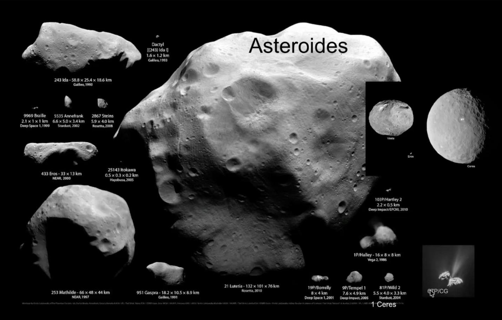
Legenda da imagem.
Determinar a forma desses objetos, especialmente os chamados objetos transnetunianos, é um grande desafio, pois eles ocupam uma região muito pequena no céu.
Uma das formas mais eficazes de estudar esses objetos é por meio das ocultações estelares. Esse fenômeno ocorre quando um asteroide passa em frente a uma estrela, bloqueando temporariamente sua luz. Essa “sombra” projetada pelo objeto pode ser observada na Terra. Ao registrar o instante em que a estrela desaparece e reaparece, conseguimos medir a duração da ocultação.
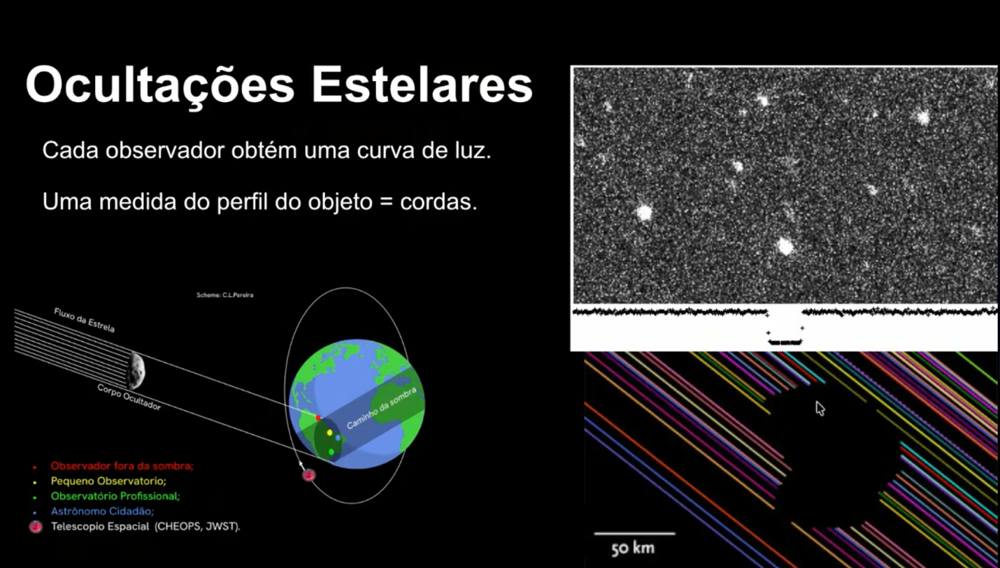
Legenda da imagem.
Quanto maior o número de observações distribuídas geograficamente, mais preciso será o cálculo do tamanho e da forma do asteroide. Esse método permite reconstruir o perfil do objeto com boa precisão.
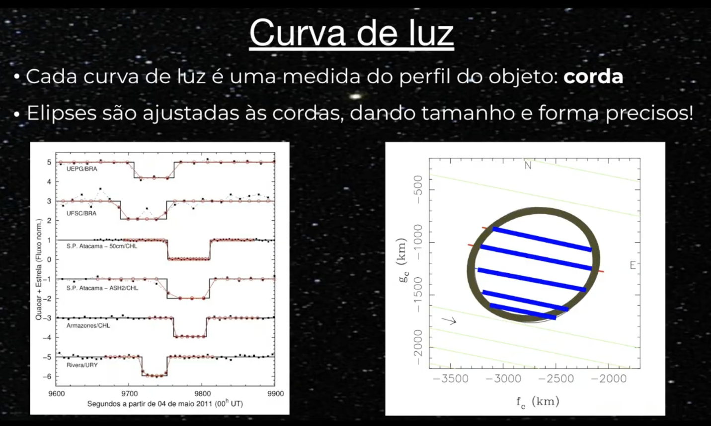
Legenda da imagem.
Por exemplo, já foram realizados estudos em que o tamanho de um asteroide foi determinado com base em observações feitas em diferentes pontos do sul da América do Sul, combinando os dados de vários observadores.
Além do tamanho e da forma, também é possível estimar o albedo do objeto, que é a fração de luz refletida por sua superfície.
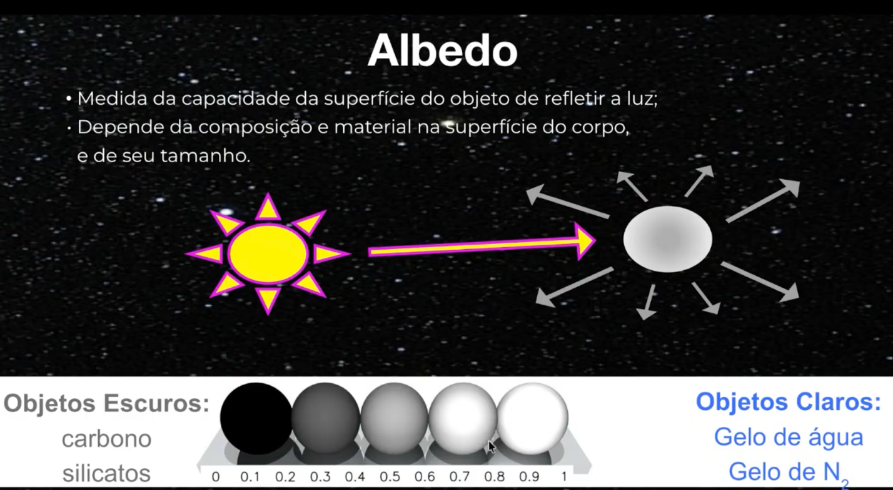
Legenda da imagem.
Combinando o albedo com outras medições, podemos inferir propriedades físicas importantes, como a composição superficial.
Em alguns casos, quando há informações adicionais (como massa estimada, por exemplo, a partir da presença de satélites naturais), é possível também calcular a densidade do objeto, o que fornece pistas sobre sua estrutura interna (se é rochoso, metálico ou mais poroso).
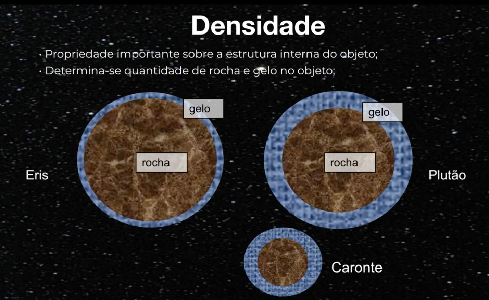
Legenda da imagem.
As ocultações estelares também podem levar a descobertas surpreendentes. Em certas situações, observa-se mais de uma queda de brilho durante o mesmo evento, indicando que dois objetos passaram em frente à estrela — o que pode levar à descoberta de novos asteroides.
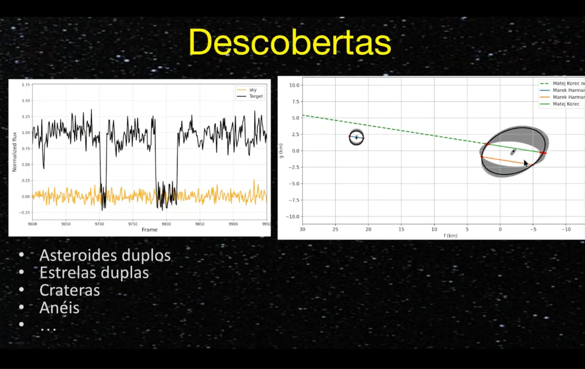
Legenda da imagem.
Além disso, esse tipo de observação pode revelar a existência de estrelas duplas, quando a luz da estrela desaparece em etapas, indicando que há duas fontes próximas sendo ocultadas separadamente.
Outro resultado fascinante é a detecção de anéis ao redor de asteroides. Pequenas quedas de brilho antes e depois da ocultação principal podem indicar a presença de material orbitando o objeto, formando sistemas de anéis — algo que antes se pensava existir apenas ao redor de planetas gigantes.
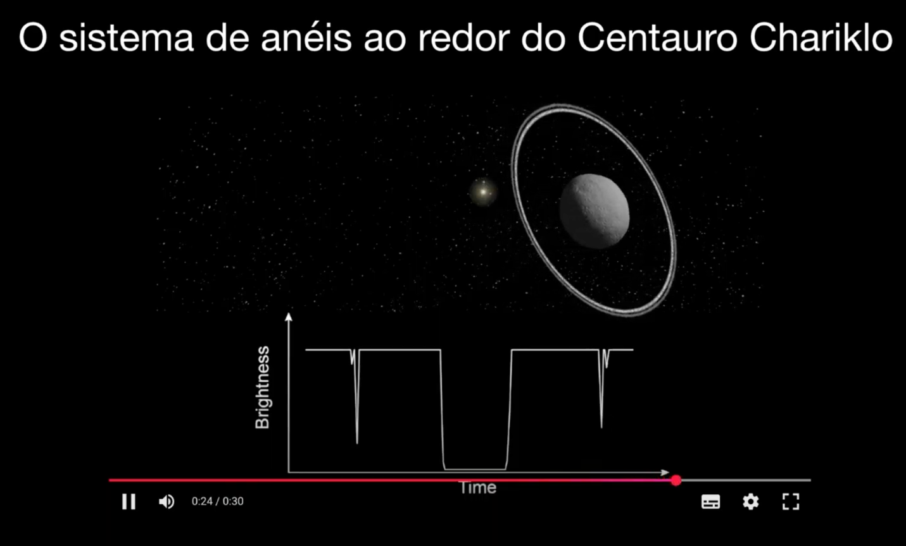
Legenda da imagem.
Várias descobertas foram feitas no Brasil:
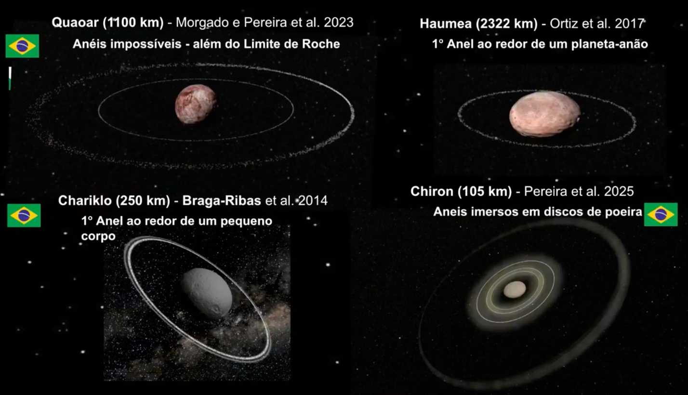
Legenda da imagem.
Embora desafiador, a observação de trânsitos de exoplanetas que causam uma diminuição no brilho da estrela hospedeira da ordem de alguns por cento também é factível, pois existem estrelas hospedeiras que podem ser visíveis a olho nu! Aqui, a natureza desafiadora dessas observações oferece uma oportunidade de explorar os limites das capacidades de telescópios como o S50.
Com agendamento cuidadoso e fotometria diferencial, observadores amadores e estudantes podem detectar sinais de trânsito, contribuindo para o refinamento de efemérides e até mesmo descobrindo novos trânsitos ao redor de estrelas brilhantes do sul.
RIBAS, Felipe Braga. Ocultações estelares: os 10 anos da descoberta dos anéis de Chariklo e os avanços no estudo do Sistema Solar. Cadernos de Astronomia, vol. 5, n. 2, p. 56-64, 2024.
Estrelas parecem pontos fixos, mas algumas mudam de brilho em escalas de tempo que vão de minutos a anos. O caso mais antigo registrado é o de Mira, na constelação da Baleia: em 1595, David Fabricius acompanhou seu desaparecimento e retorno, e o ciclo de cerca de onze meses foi estabelecido no século seguinte. Na época, atribuiu-se a variação a manchas escuras numa estrela em rotação; hoje se sabe que Mira pulsa: sua superfície se expande e se contrai, e o brilho acompanha esse movimento. Em 1784, John Goodricke identificou variações regulares em δ Cephei, com período de pouco mais de cinco dias. Essas duas estrelas inauguraram duas famílias de variáveis: as de longo período, com ciclos irregulares entre 100 e 700 dias, e as Cefeidas clássicas, cujo brilho varia de forma mais discreta e previsível. A importância das Cefeidas não está apenas no fenômeno em si, mas no que ele permite medir. Henrietta Swan Leavitt, trabalhando como calculadora no Observatório de Harvard, comparou fotografias de milhares de estrelas e percebeu que, nas Cefeidas da Pequena Nuvem de Magalhães, quanto maior o período, maior a luminosidade. Como todas estão aproximadamente à mesma distância, as diferenças de brilho aparente refletem diferenças intrínsecas. Isso deu origem à relação período-luminosidade: basta cronometrar o ciclo de uma Cefeida para estimar sua luminosidade e, comparando com o brilho observado, obter sua distância. A calibração exigiu esforço, mas o resultado transformou as Cefeidas em marcos cósmicos, visíveis a distâncias intergalácticas. Entender por que essas estrelas pulsam levou algumas décadas. Harlow Shapley argumentou, em 1914, que a hipótese de binárias era inviável: o tamanho necessário da estrela excederia a órbita do sistema. Ele propôs que estrelas individuais vibravam radialmente, como se respirassem. Eddington deu base teórica à ideia, e as observações de δ Cephei confirmaram: brilho, temperatura, raio e velocidade superficial variam em conjunto. A mudança de temperatura domina a variação de luminosidade; a variação de tamanho contribui menos. O brilho máximo ocorre quando a superfície se expande mais rapidamente, depois do raio mínimo: um atraso de fase que se explica pelo mecanismo que sustenta a oscilação. No diagrama H-R, a maioria das estrelas pulsantes ocupa uma faixa estreita e quase vertical à direita da sequência principal, chamada faixa de instabilidade. Estrelas entram e saem dessa faixa conforme evoluem, e por isso a pulsação é um fenômeno transitório: de cada cem mil estrelas, apenas uma pulsa no momento em que a observamos. As classes se distinguem por período, população e tipo de oscilação. As Cefeidas clássicas são supergigantes de população I, com períodos de 1 a 50 dias. As W Virginis são Cefeidas pobres em metais, cerca de quatro vezes menos luminosas para o mesmo período. As RR Lyrae são estrelas de ramo horizontal em aglomerados globulares, com períodos de horas e luminosidade semelhante entre si, outro recurso para medir distâncias. As δ Scuti são estrelas evoluídas de tipo F, próximas à sequência principal, com oscilações radiais e não radiais. As β Cephei são estrelas B quentes, com pulsações de poucas horas. As ZZ Ceti são anãs brancas pulsantes, com períodos de centenas a milhares de segundos. As variáveis de longo período, como Mira, são supergigantes vermelhas com envelopes convectivos extensos, e as roAp são estrelas Ap com campos magnéticos fortes e amplitudes ínfimas. A física da pulsação começa por uma relação simples: o período é inversamente proporcional à raiz quadrada da densidade média. Isso explica por que supergigantes pulsam em dezenas de dias e anãs brancas em segundos. O mecanismo que sustenta as oscilações foi identificado nas zonas de ionização parcial. Em camadas onde o hidrogênio ou o hélio estão parcialmente ionizados, a compressão não eleva a temperatura tanto quanto elevaria num gás neutro: parte da energia vai para ionizar mais átomos. Com temperatura menor, a opacidade aumenta e a camada absorve calor. Na expansão, os íons se recombinam, liberam energia e a opacidade cai. Esse ciclo funciona como uma válvula térmica, e recebe o nome de mecanismo κ, reforçado pelo mecanismo γ. A zona de ionização do He II, a cerca de 40.000 K, é a principal responsável por sustentar as pulsações dentro da faixa de instabilidade. A zona de ionização do hidrogênio, mais externa, desempenha papel mais sutil: ela se move em relação à superfície e produz o atraso de fase observado. Nos casos fora da faixa, como as β Cephei, o ferro assume o papel de agente da opacidade, graças ao grande número de linhas de absorção próximas de 100.000 K. Modelar esse comportamento exige equações que abandonam o equilíbrio hidrostático. Em cálculos não lineares, as camadas de massa são deslocadas e soltas, e a amplitude cresce ou decai até um ciclo limite. Esses modelos reproduzem curvas de luz assimétricas, mas consomem tempo computacional e podem apresentar comportamento caótico. Uma alternativa é linearizar as equações, supondo oscilações de pequena amplitude. O custo é que o resultado é forçado a ser senoidal e a amplitude final não pode ser determinada. Um modelo didático de uma zona (uma casca fina em torno de uma massa central) mostra que, para γ maior que 4/3, a estrela oscila harmonicamente; para γ menor que 4/3, ela colapsa. Essa condição reaparece no estudo de anãs brancas. Nem toda pulsação é radial. Em modos não radiais, algumas regiões da superfície se expandem enquanto outras se contraem. Esses padrões são descritos por harmônicos esféricos e se dividem em três famílias. Os modos p são ondas de pressão, com movimento concentrado nas camadas superficiais. Os modos g são ondas de gravidade interna, ligadas à flutuabilidade do material, e atingem o interior profundo. O modo f é uma onda de superfície, sem análogo radial. A frequência de buoyancy, ou de Brunt-Väisälä, define onde os modos g podem existir e é nula no centro e nas bordas das zonas convectivas. Essas ideias se aplicam ao Sol e a outras estrelas. A heliossismologia estuda as oscilações solares, descobertas em 1962. O Sol vibra com milhões de modos superpostos, com velocidades superficiais de poucos centímetros por segundo e variações de luminosidade da ordem de um milionésimo. Os modos p de cinco minutos, confinados na zona convectiva, revelam a profundidade de sua base, a rotação diferencial e a abundância de hélio nas camadas externas. Os modos g, presos abaixo da zona convectiva, chegam à superfície com amplitude muito reduzida e ainda não foram identificados com certeza. A asterossismologia estende essas técnicas a outras estrelas, incluindo as δ Scuti e as roAp, cujas oscilações permitem investigar composição, rotação e campos magnéticos. Para quem não vê com os olhos, o estudo de estrelas variáveis continua acessível. Curvas de luz podem ser convertidas em som, com a frequência ou o volume acompanhando o brilho; séries temporais podem ser representadas em gráficos táteis ou descritas em texto; padrões de periodicidade podem ser explorados por meio de ritmos e intervalos. A variação estelar é, afinal, um fenômeno de tempo e intensidade: grandezas que não dependem da visão para serem medidas, analisadas e comunicadas.
Eta Car é uma das estrelas mais luminosas do Universo local. É observada desde o século XVII e apresentou características surpreendentes desde então. Descobriu-se que é uma binária massiva interagente com longo período (P=2022d) e excentricidade extremamente alta (e=0,94). Ela passará pelo periastro no final de setembro de 2025 e os dados mais importantes a serem obtidos serão a fotometria em banda V (V~4,0). Esse grande brilho e o fato de a estrela cruzar o meridiano ao meio-dia em 1º de setembro tornam-na um alvo difícil, no entanto as observações são viáveis a partir do sul do Brasil, Argentina e Chile. A precisão melhor que 0,01 mag (facilmente alcançada com dezenas a centenas de imagens) é necessária porque o pico a ser monitorado tem amplitude de ~0,25 mag. Há uma estrela de comparação (HD303308 V=8,15) a 1 minuto de arco ao norte. O período crítico é de 15/ago a 15/set, o que exige amostragem diária. Nosso objetivo é obter dezenas de pontos de dados durante os crepúsculos astronômicos (vespertino e matutino). O pico fotométrico não é explicado por nenhum modelo existente do sistema. Mostrou-se que ele atinge uma amplitude maior a cada periastro e que o pico se desloca a uma taxa de 1 dia mais cedo por órbita. O cenário possível é que seja causado por uma mancha brilhante na “superfície” da estrela primária, iluminada/aquecida pela estrela secundária quando elas se aproximam. As estrelas possivelmente estão se aproximando uma da outra a uma taxa rápida (órbita instável?!), de modo que uma fusão estelar possa ocorrer em alguns séculos (outra Erupção Gigante como em 1847?). Um grande evento iminente no céu como este exige a atenção de toda a humanidade, mesmo que não ocorra em nossa vida. Este objeto receberá atenção da imprensa mundial por ocasião do periastro, provavelmente chamando a atenção do público para a campanha de monitoramento que estaremos realizando.
CARROLL, Bradley W.; OSTLIE, Dale A. An Introduction to Modern Astrophysics. 2nd ed. San Francisco: Pearson Addison-Wesley, 2007. p. 483-512. ISBN 0-321-44284-9.
Estrelas jovens devem estar próximas de seus locais de nascimento e ter velocidades ainda muito semelhantes às iniciais. Nesse contexto, os movimentos próprios estelares são fundamentais para distinguir membros do aglomerado de estrelas de campo. Por exemplo, ao traçar um diagrama vetorial de movimentos próprios, pode-se distinguir facilmente as estrelas que compartilham um movimento comum (membros do aglomerado) daquelas com movimentos aleatórios (estrelas de campo). Além disso, combinando os movimentos próprios dos membros do aglomerado com informações adicionais (por exemplo, paralaxe e velocidade radial), pode-se reconstruir o movimento 3D e a história de formação do aglomerado na Galáxia.
Aglomerados estelares são grupos de estrelas que nasceram da mesma nuvem molecular, praticamente ao mesmo tempo e com a mesma composição química. Essa origem comum faz deles laboratórios naturais: como a massa inicial é o principal fator que determina a evolução de uma estrela, as diferenças observadas entre os membros de um aglomerado refletem, em grande parte, apenas essa diferença de massa. O conjunto se torna, assim, um grupo de estrelas de idades e composições semelhantes, mas com massas distintas, um cenário ideal para testar modelos de evolução estelar. Existem dois grandes tipos. Os aglomerados globulares são antigos, muito populosos e ocupam o halo galáctico; suas estrelas são pobres em metais (População II) e se formaram quando a Galáxia era jovem. Já os aglomerados abertos, também chamados de galácticos, são mais jovens, menos populosos e se concentram no disco; suas estrelas são ricas em metais (População I). As Plêiades são um exemplo próximo e conhecido. Aglomerados abertos tendem a se dispersar com o tempo, porque a atração gravitacional mútua nem sempre é suficiente para mantê-los unidos diante de encontros com outras estrelas, nuvens e marés galácticas. Como saber quais estrelas pertencem a um aglomerado? A resposta está no movimento. Estrelas de um mesmo aglomerado compartilham a mesma velocidade pelo espaço: isso inclui tanto a velocidade radial, medida pelo deslocamento Doppler das linhas espectrais, quanto o movimento próprio, que é o deslocamento angular aparente das estrelas na esfera celeste ao longo dos anos. Se várias estrelas numa mesma região do céu apresentam movimento próprio semelhante e direção de deslocamento consistente, é provável que estejam fisicamente ligadas. Estrelas de campo, que apenas estão na mesma linha de visada, mostram movimentos próprios dispersos e não acompanham o grupo. Assim, o movimento próprio funciona como critério de pertencimento: separa membros reais de intrusos. A distância também ajuda. Como as dimensões de um aglomerado são pequenas comparadas à sua distância da Terra, pode-se supor que todas as suas estrelas têm o mesmo módulo de distância. Isso permite construir diagramas cor-magnitude, em vez de diagramas H-R com magnitudes absolutas, deslocando verticalmente todas as estrelas pelo mesmo valor. Ao ajustar a sequência principal observada a uma sequência principal calibrada em magnitude absoluta, obtém-se a distância do aglomerado. Esse método é chamado de paralaxe espectroscópica ou ajuste da sequência principal. Os diagramas cor-magnitude revelam a idade. Em um aglomerado jovem, estrelas massivas ainda estão na sequência principal; em um mais velho, as estrelas mais massivas já evoluíram para gigantes, e a sequência principal termina num ponto de desvio. A posição desse ponto indica há quanto tempo o aglomerado existe. Assim, aglomerados abertos apresentam idades que vão de alguns milhões a alguns bilhões de anos, enquanto os globulares estão entre os objetos mais antigos da Galáxia. Há ainda detalhes curiosos. Algumas estrelas aparecem acima do ponto de desvio, na região que deveria estar vazia: são as blue stragglers, que parecem ter atrasado sua saída da sequência principal. A explicação mais provável envolve troca de massa com uma companheira binária ou colisões entre estrelas. Também se observa que poucas estrelas ocupam os ramos gigante assintótico e pós-assintótico, porque essa fase de perda intensa de massa é rápida demais para que muitas sejam flagradas nela. Para quem não vê com os olhos, o estudo de aglomerados continua acessível. Diagramas cor-magnitude podem ser convertidos em representações táteis, com pontos em relevo ou texturas diferentes para faixas de magnitude e cor. Sons podem mapear a posição das estrelas no diagrama, com frequência ou intensidade associadas a brilho e temperatura. Descrições verbais detalhadas, tabelas de dados e softwares leitores de tela também permitem acompanhar a análise. O movimento próprio, em particular, é uma grandeza angular e temporal que pode ser medida e comunicada sem depender da visão: trata-se de registrar posições ao longo do tempo e comparar deslocamentos. Em resumo, aglomerados estelares são grupos de estrelas nascidas juntas, e os aglomerados abertos, em especial, ajudam a entender a estrutura do disco galáctico e a evolução estelar. O movimento próprio e a velocidade radial identificam quem pertence ao grupo; a cor e o brilho, organizados em diagramas, revelam idade e distância. É um campo em que observação, teoria e análise de dados se combinam para reconstruir a história das estrelas, e cujos resultados podem ser compartilhados por diferentes formas de percepção.
CARROLL, Bradley W.; OSTLIE, Dale A. An Introduction to Modern Astrophysics. 2nd ed. San Francisco: Pearson Addison-Wesley, 2007. p. 398-479. ISBN 0-321-44284-9.
...
O telescópio usa abertura de 50 mm, sensor CMOS integrado e derrotador de campo embutido. Com uma cunha, opera em modo equatorial para fotometria de longa exposição. O pipeline automatizado reduz quadros escuros/planos e realiza astrometria WCS via Gaia DR3.
...Combinando com catálogos do Gaia, calculamos movimentos próprios com uma linha de base temporal estendida, identificando membros de aglomerados e sistemas binários.
...O S50 resolve os pontos de virada da sequência principal para aglomerados com menos de 1 Gyr.
We will have a programmer who will set up a hub so that project observers can upload their images to a common system (a server hosted at one of the participating universities). At the end of each night, observers will send their images to the server. This will allow the technical person(s) to process and calibrate (astrometry and flux) all the data collected each night. The benefit for observers using this system is that they will be able to download the processed and calibrated data and access all the automatically obtained parameters for each object through a user-friendly platform. This eliminates the burden of data processing and parameter extraction for the observer, allowing them to focus solely on publishing or advertising the results, using the data for education, or publication in specialized journals. In return, observers agree to allow open access to the processed and calibrated data, as well as the extracted parameters, so that anyone interested can publish them in scientific studies or use them for educational or outreach purposes.
Pessoas pesquisadoras, professoras e colaboradoras do Brasil, Chile e Argentina.
Este projeto...